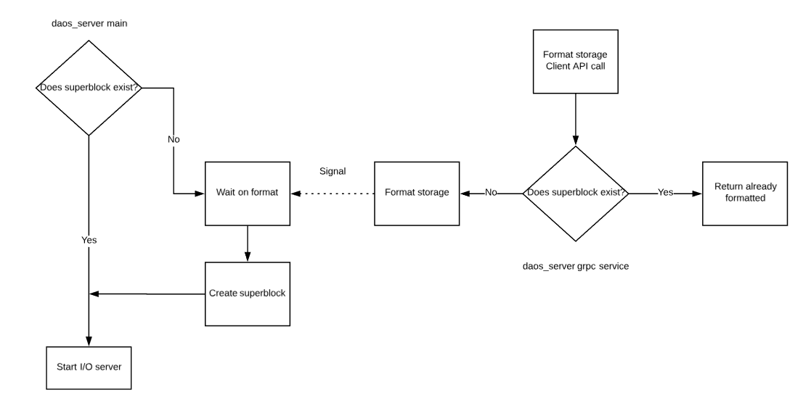

DAOS System Deployment
Preflight Checklist
This section covers the preliminary setup required on the compute and storage nodes before deploying DAOS.
Time Synchronization
The DAOS transaction model relies on timestamps and requires time to be synchronized across all the storage and client nodes. This can be done using NTP or any other equivalent protocol.
Users and Groups
DAOS requires users and groups to be synchronized on both storage and client nodes.
Runtime Directory Setup
DAOS uses a series of Unix Domain Sockets to communicate between its various components. On modern Linux systems, Unix Domain Sockets are typically stored under /run or /var/run (usually a symlink to /run) and are a mounted tmpfs file system. There are several methods for ensuring the necessary directories are setup.
A sign that this step may have been missed is when starting daos_server or daos_agent, you may see the message:
mkdir /var/run/daos\_server: permission denied
Unable to create socket directory: /var/run/daos\_server
Non-default Directory
By default, daos_server and daos_agent will use the directories /var/run/daos_server and /var/run/daos_agent respectively. To change the default location that daos_server uses for its runtime directory, either uncomment and set the socket_dir configuration value in install/etc/daos_server.yml, or pass the location to daos_server on the command line using the -d flag. For the daos_agent, an alternate location can be passed on the command line using the -runtime_dir flag.
Default Directory (non-persistent)
Files and directories created in /run and /var/run only survive until the next reboot. However, if reboots are infrequent, an easy solution while still utilizing the default locations is to create the required directories manually. To do this execute the following commands.
daos_server:
mkdir /var/run/daos\_server
chmod 0755 /var/run/daos\_server
chown user:user /var/run/daos\_server (where user is the user you
will run daos\_server as)
daos_agent:
mkdir /var/run/daos\_agent
chmod 0755 /var/run/daos\_agent
chown user:user /var/run/daos\_agent (where user is the user you
will run daos\_agent as)
Default Directory (persistent)
If the server hosting daos_server or daos_agent will be rebooted often, systemd provides a persistent mechanism for creating the required directories called tmpfiles.d. This mechanism will be required every time the system is provisioned and requires a reboot to take effect.
To tell systemd to create the necessary directories for DAOS:
-
Copy the file utils/systemd/daosfiles.conf to /etc/tmpfiles.d\ cp utils/systemd/daosfiles.conf /etc/tmpfiles.d
-
Modify the copied file to change the user and group fields (currently daos) to the user daos will be run as
-
Reboot the system, and the directories will be created automatically on all subsequent reboots.
Elevated Privileges
Several tasks (e.g., storage access, hugepages configuration) performed by the DAOS server require elevated permissions on the storage nodes (requiring certain commands to be run as root or with sudo).
Hardware Provisioning
Storage Preparation
SCM Preparation
This section addresses how to verify that Optane DC Persistent Memory (DCPM) is correctly installed on the storage nodes, and how to configure it in interleaved mode to be used by DAOS in AppDirect mode. Instructions for other types of SCM may be covered in the future.
Provisioning the SCM occurs by configuring DCPM modules in AppDirect memory regions (interleaved mode) in groups of modules local to a specific socket (NUMA), and resultant nvdimm namespaces are defined by a device identifier (e.g., /dev/pmem0).
DCPM can be configured and managed through the ipmctl library and associated tool. The ipmctl command can be run as root and has detailed man pages and help output (use "ipmctl help" to display it).
The list of NVDIMMs can be displayed as follows:
ipmctl show -dimm
| DimmID | Capacity | HealthState | ActionRequired | LockState | FWVersion |
|---|---|---|---|---|---|
| 0x0001 | 502.5 GiB | Healthy | 0 | Disabled | 01.00.00.5127 |
| 0x0101 | 502.5 GiB | Healthy | 0 | Disabled | 01.00.00.5127 |
| 0x1001 | 502.5 GiB | Healthy | 0 | Disabled | 01.00.00.5127 |
| 0x1101 | 502.5 GiB | Healthy | 0 | Disabled | 01.00.00.5127 |
Moreover, DAOS requires DCPM to be configured in interleaved mode. A storage subcommand (prepare --scm-only) can be used as a "command mode" invocation of daos_server and must be run as root. SCM modules will be configured into interleaved regions with memory mode set to "AppDirect" mode with one set per socket (each module is assigned to a socket, and reports this via its NUMA rating).
sudo daos_server [<app_opts>] storage prepare [--scm-only|-s] [<cmd_opts>]
The first time the command is run, the SCM AppDirect regions will be created as
resource allocations on any available DCPM modules (one region per NUMA
node/socket). The regions are activated after BIOS reads the new resource
allocations, and after initial completion the command prints a
message to ask for a reboot (the command will not initiate reboot itself).
'sudo daos_server storage prepare --scm-only' should be run for a second time after system reboot to create the pmem kernel devices (/dev/pmemX namespaces created on the new SCM regions).
One namespace per region is created, and each namespace may take up to a few minutes to create. Details of the pmem devices will be displayed in JSON format on command completion.
Example output from the initial call (with the SCM modules set to default MemoryMode):
Memory allocation goals for SCM will be changed and namespaces modified, this
will be a destructive operation. ensure namespaces are unmounted and SCM is
otherwise unused.
Are you sure you want to continue? (yes/no)
yes
A reboot is required to process new memory allocation goals.
Example output from the subsequent call (SCM modules configured to AppDirect mode, and host rebooted):
Memory allocation goals for SCM will be changed and namespaces modified. This
will be a destructive operation. Ensure namespaces are unmounted and the SCM
is otherwise unused.
Are you sure you want to continue? (yes/no)
yes
creating SCM namespace, may take a few minutes...
creating SCM namespace, may take a few minutes...
Persistent memory kernel devices:
[{UUID:5d2f2517-9217-4d7d-9c32-70731c9ac11e Blockdev:pmem1 Dev:namespace1.0 NumaNode:1} {UUID:2bfe6c40-f79a-4b8e-bddf-ba81d4427b9b Blockdev:pmem0 Dev:namespace0.0 NumaNode:0}]
sudo daos_server [<app_opts>] storage prepare [--scm-only|-s] --reset [<cmd_opts>]
All namespaces are disabled and destroyed. The SCM regions are removed by resetting modules into "MemoryMode" through resource allocations.
Note that undefined behavior may result if the namespaces/pmem kernel devices are mounted before running reset (as per the printed warning).
A subsequent reboot is required for BIOS to read the new resource allocations.
Example output when resetting the SCM modules:
Memory allocation goals for SCM will be changed and namespaces modified, this
will be a destructive operation. ensure namespaces are unmounted and SCM is
otherwise unused.
Are you sure you want to continue? (yes/no)
yes
removing SCM namespace, may take a few minutes...
removing SCM namespace, may take a few minutes...
resetting SCM memory allocations
A reboot is required to process new memory allocation goals.
NVMe Preparation
DAOS supports only NVMe-capable SSDs that are accessed directly from userspace through the SPDK library.
NVMe access through SPDK as an unprivileged user can be enabled by
running the example command
sudo daos_server storage prepare --nvme-only -p 4096 -u bob.
This will perform the required setup in order for daos_server to be run
by user "bob" who will own the hugepage mountpoint directory and vfio
groups as needed in SPDK operations.
If the target-user is unspecified (-u short option), the target user
will be the issuer of the sudo command (or root if not using sudo).
The specification of hugepages (-p short option) defines the number
of huge pages to allocate for use by SPDK.
A list of PCI addresses can also be supplied to avoid unbinding all
PCI devices from the kernel, using the -w / --pci-whitelist option.
The sudo daos_server [<app_opts>] storage prepare [--nvme-only|-n] [<cmd_opts>]
command wraps the SPDK setup script to unbind the devices from
original kernel drivers and then binds the devices to a UIO driver
through which SPDK can communicate.
When a PCI address whitelist is not specified, SPDK access to all SSDs will be enabled for the user (either the user executing sudo, the user specified as --target-user, or effective user - in that order of precedence) involving changing the ownership of relevant files in addition to SPDK setup.
The devices can then be bound back to the original drivers with the command
sudo daos_server [<app_opts>] storage prepare [--nvme-only|-n] --reset [<cmd_opts>].
Storage Detection & Selection
While the DAOS server auto-detects all the usable storage, the administrator will still be provided with the ability through the configuration file (see next section) to whitelist or blacklist the storage devices to be (or not) used. This section covers how to manually detect the storage devices potentially usable by DAOS to populate the configuration file when the administrator wants to have finer control over the storage selection.
sudo daos_server storage scan can be used to display locally-attached SSDs
and Intel Persistent Memory Models usable by DAOS.
$ daos_server storage scan
[...]
NVMe SSD controller and constituent namespaces:
PCI Addr:0000:da:00.0 Serial:PHKS7505005Y750BGN Model:INTEL SSDPED1K750GA Fwrev:E2010325 Socket:1
Namespace: id:1 capacity:750
PCI Addr:0000:81:00.0 Serial:PHKS7505007J750BGN Model:INTEL SSDPED1K750GA Fwrev:E2010325 Socket:1
Namespace: id:1 capacity:750
PCI Addr:0000:87:00.0 Serial:CVFT5392000G1P6DGN Model:INTEL SSDPEDMD016T4 Fwrev:8DV10171 Socket:1
Namespace: id:1 capacity:1600
SCM modules:
PhysicalID:36 Capacity:539661172736 Location:(socket:0 memctrlr:0 chan:0 pos:1)
PhysicalID:40 Capacity:539661172736 Location:(socket:0 memctrlr:0 chan:1 pos:1)
PhysicalID:44 Capacity:539661172736 Location:(socket:0 memctrlr:0 chan:2 pos:1)
PhysicalID:50 Capacity:539661172736 Location:(socket:0 memctrlr:1 chan:0 pos:1)
PhysicalID:52 Capacity:539661172736 Location:(socket:0 memctrlr:1 chan:1 pos:0)
PhysicalID:55 Capacity:539661172736 Location:(socket:0 memctrlr:1 chan:2 pos:0)
PhysicalID:62 Capacity:539661172736 Location:(socket:1 memctrlr:0 chan:0 pos:1)
PhysicalID:66 Capacity:539661172736 Location:(socket:1 memctrlr:0 chan:1 pos:1)
PhysicalID:70 Capacity:539661172736 Location:(socket:1 memctrlr:0 chan:2 pos:1)
PhysicalID:76 Capacity:539661172736 Location:(socket:1 memctrlr:1 chan:0 pos:1)
PhysicalID:78 Capacity:539661172736 Location:(socket:1 memctrlr:1 chan:1 pos:0)
PhysicalID:81 Capacity:539661172736 Location:(socket:1 memctrlr:1 chan:2 pos:0)
The pciaddr field above is what should be used in the server configuration file to identified NVMe SSDs.
Devices with the same NUMA node/socket should be used in the same per-server section of the server configuration file for best performance.
Network Interface Detection and Selection
To display the supported OFI provider, use the following command:
/scratch/standan/daos\_m/opt/ofi/bin/fi\_info -l
psm2:
version: 1.7
ofi\_rxm:
version: 1.0
ofi\_rxd:
version: 1.0
verbs:
version: 1.0
UDP:
version: 1.1
sockets:
version: 2.0
tcp:
version: 0.1
ofi\_perf\_hook:
version: 1.0
ofi\_noop\_hook:
version: 1.0
shm:
version: 1.0
ofi\_mrail:
version: 1.0
The fi_pingpong test (delivered as part of OFI/libfabric) can be used to verify that the targeted OFI provider works fine:
node1\$ fi\_pingpong -p psm2
node2\$ fi\_pingpong -p psm2 \${IP\_ADDRESS\_NODE1}
bytes \#sent \#ack total time MB/sec usec/xfer Mxfers/sec
64 10 =10 1.2k 0.00s 21.69 2.95 0.34
256 10 =10 5k 0.00s 116.36 2.20 0.45
1k 10 =10 20k 0.00s 379.26 2.70 0.37
4k 10 =10 80k 0.00s 1077.89 3.80 0.26
64k 10 =10 1.2m 0.00s 2145.20 30.55 0.03
1m 10 =10 20m 0.00s 8867.45 118.25 0.01
Further details will be added to this section in a future revision.
Storage Firmware Upgrade
Firmware on an NVMe controller can be updated from an image on local storage (initially installing from a local path on the host that is running daos_server but to be extended to downloading remotely from central storage location).
When the controller is selected, and an update firmware task runs, controller data is accessed through an existing linked list through the binding fwupdate call, and a raw command specifying a firmware update with the local image (specified by file path) and slot identifier. The firmware update is followed by a hard reset on the controller.
Storage Burn in
Burn-in testing can be performed on discovered NVMe controllers. By default, this involves a 15-minute slow burn-in test with a mixed read/write workload issued by fio, but test duration and load strength should be user-configurable. Burn-in should run in the background to allow administrators to use the control-plane for other tasks in the meantime.
The fio repo is to be built and needs to be referenced when building the SPDK fio_plugin. The plug-in can then be run by fio to exercise the NVMe device through SPDK. Currently, the output of the burn-in is displayed in the shell, and control is returned to the user after completion. Future iterations may perform this as a background task.
Server Configuration
This section addresses how to configure the DAOS servers on the storage nodes before starting it.
Certificate Generation
The DAOS security framework relies on certificates to authenticate administrators. The security infrastructure is currently under development and will be delivered in DAOS v1.0. Initial support for certificates has been added to DAOS and can be disabled either via the command line or in the DAOS server configuration file. Currently, the easiest way to disable certificate support is to pass the -i flag to daos_server.
Server Configuration File
The daos_server configuration file is parsed when starting the
daos_server process. The configuration file location can be specified
on the command line (daos_server -h for usage) or default location
(install/etc/daos_server.yml).
Parameter descriptions are specified in daos_server.yml and example configuration files in the examples directory.
Any option supplied to daos_server as a command line option or flag will
take precedence over equivalent configuration file parameter.
For convenience, active parsed configuration values are written to a temporary file for reference, and the location will be written to the log.
Configuration File Options
The example configuration file lists the default empty configuration, listing all the options (living documentation of the config file). Live examples are available at https://github.com/daos-stack/daos/tree/master/utils/config
The location of this configuration file is determined by first checking for the path specified through the -o option of the daos_server command line. Otherwise, /etc/daos_server.conf is used.
Refer to the example configuration file (daos_server.yml) for latest information and examples.
Server Startup
DAOS currently relies on PMIx for server wire-up and application to server connection. As a result, the DAOS servers can only be started via orterun (part of OpenMPI). A new bootstrap procedure is under implementation and will be available for DAOS v1.0. This will remove the dependency on PMIx and will allow the DAOS servers to be started individually (e.g. independently on each storage node via systemd) or collectively (e.g. pdsh, mpirun or as a Kubernetes Pod).
Parallel Launcher
As stated above, only orterun(1) is currently supported.
The list of storage nodes can be specified on the command line via the -H option. The DAOS server and the application can be started separately but must share a URI directory (referred to as shared_dir) to connect. Also, the DAOS server must be started with the --enable-recovery option to support server failure. See the orterun(1) man page for additional options.
To start the DAOS server, run:
orterun --map-by node --mca btl tcp,self --mca oob tcp -np <num\_servers>
-H <server_list> --enable-recovery daos\_server -a <shared\_dir> -o
<config_file>
The --enable-recovery is required for fault tolerance to guarantee that the fault of one server does not cause the others to be stopped.
The shared directory should be accessible by all nodes.
The --allow-run-as-root option can be added to the command line to allow the daos_server to run with root privileges on each storage nodes (for example when needing to perform privileged tasks relating to storage format).
The content of the configuration file is documented in the next section and a few examples are available.
Client processes (i.e. utilities, applications, ...) should have the following environment variables set to connect to the DAOS servers:
export DAOS\_SINGLETON\_CLI=1
export CRT\_ATTACH\_INFO\_PATH=shared\_dir
Systemd Integration
Systemd support for daos_server is still experimental as it will start the daos_server and daos_io_server components in PMIXless mode, which is still in development.
DAOS Server can be started as a systemd service. The DAOS Server unit file is installed in the correct location when installing from RPMs. If you wish to use systemd with a development build, you must copy the service file from utils/systemd to /usr/lib/systemd/system. Once the file is copied modify the ExecStart line to point to your in tree daos_server binary.
Once the service file is installed you can start daos_server with the following commands:
systemctl enable daos-server
systemctl start daos-server
To check the component status use:
systemctl status daos-server
If DAOS Server failed to start, check the logs with:
journalctl --unit daos-server
Kubernetes Pod
DAOS service integration with Kubernetes is planned and will be supported in a future DAOS version.
Service Monitoring
On start-up, the daos_server will create and initialize the following components:
-
gRPC server to handle requests over client API
-
dRPC server to handle requests from IO servers over the UNIX domain socket
-
storage subsystems for handling interactions with NVM devices
-
SPDK environment using a shared memory segment identifier, causing the process to act as a primary in multi-process mode. From there, the main process can respond to requests over the client API for information through the SPDK interface.
The daos_shell is a transitory tool used to exercise the management api and can be used to verify that the DAOS servers are up and running. It is to be run as a standard, unprivileged user as follows:
\$ daos\_shell -l storagenode1:10001,storagenode2:10001 storage scan
"storagenode" should be replaced with the actual hostname of each storage node. This command will show whether the DAOS server is properly running and initialized on each storage node. A more comprehensive and user-friendly tool built over the management API is under development. A first version will be available for DAOS v1.0.
DAOS Storage & Server Formatting
Storage Format
When 'daos_server' is started for the first time (and no SCM directory exists),
it enters "maintenance mode" and waits for a daos_shell storage format call to
be issued from the management tool.
This remote call will trigger the formatting of the locally attached storage on
the host for use with DAOS using the parameters defined in the server config file.
daos_shell -i -l <host:port>[,...] storage format will normally be run on a login
node specifying a hostlist (-l <host:port>[,...]) of storage nodes with SCM/DCPM
modules and NVMe SSDs installed and prepared.
SCM Format
When the command is run, the pmem kernel devices created on SCM/DCPM regions are formatted and mounted based on the parameters provided in the server config file.
scm_mountspecifies the location of the mountpoint to create.scm_classcan be set toramto use a tmpfs in the situation that no SCM/DCPM is available (scm_size dictates the size of tmpfs in GB), when set todcpmthe device specified underscm_listwill be mounted atscm_mountpath.
NVMe Format
When the command is run, NVMe SSDs are formatted and set up to be used by DAOS based on the parameters provided in the server config file.
bdev_class can be set to nvme to use actual NVMe devices with SPDK for DAOS
storage.
Other bdev_class values can be used for emulation of NVMe storage as specified
in the server config file.
bdev_list identifies devices to use with a list of PCI addresses (this can be
populated after viewing results from storage scan command).
After the format command is run, the path specified by the server configuration
file scm_mount parameter should be mounted and should contain a file named
daos_nvme.conf.
The file should describe the devices with PCI addresses as listed in the
bdev_list parameter of the server config file.
The presence and contents of the file indicate that the specified NVMe SSDs have
been configured correctly for use with DAOS.
The contents of the NVMe SSDs listed in the server configuration file bdev_list
parameter will be reset on format.
Server Format
Before the format command is run, no superblock file should exist under the
path specified by scm_mount parameter in the server configuration file.
After the storage format command is run, the path specified by the server
configuration file scm_mount parameter should be mounted and should contain
a file named superblock indicating that the server has been formatted.
When starting, daos_server will skip maintenance mode and attempt to start
IO services if the superblock is found in scm_mount.
Basic Workflow
Control plane server (daos_server) instances will listen for requests from the management tool (daos_shell), enabling users to perform provisioning operations on network and storage hardware remotely on storage nodes (from for example a login node).
When daos_server instances have been started on each storage node
for the first time, calling
daos_shell -l <host:port>,... storage format -f formats persistent
storage on the server node (skipping confirmation) on devices specified
in the server configuration file, then writes the superblock and
starts the data plane.

Typically an administrator will perform the following tasks:
-
Prepare NVMe and SCM Storage
sudo daos_server [<app_opts>] storage prepare [<cmd_opts>]NVMe details SCM details
-
Scan Storage
sudo daos_server [<app_opts>] storage scan [<cmd_opts>]details
-
Add device identifiers to Server config file
vim <daos>/utils/config/examples/daos_server_sockets.ymldetails- just specify NVMe PCI addresses with
bdev_listfor now
-
Start DAOS control plane
orterun -np 2 -H boro-44,boro-45 --enable-recovery daos_server -a shared_dir -o <daos>/utils/config/examples/daos_server_sockets.yml startdetails
-
Provision Storage
-
Amend Server config file (adjust based on the results of storage provisioning, requires a subsequent restart of
daos_server)vim <daos>/utils/config/examples/daos_server_sockets.ymldetails- populate the
scm_*andbdev_*parameters as used in format (below)
-
Format Storage (from any node)
- When
daos_serveris started for the first time (and no SCM directory exists),daos_serverenters "maintenance mode" and waits for adaos_shell storage formatcall to be issued from the management tool. This remote call will trigger the formatting of the locally attached storage on the host for use with DAOS using the parameters defined in the server config file. daos_shell -i -l <host:port>,... storage format -fmanagement tool details- SCM specific details
- NVMe specific details
- When
Example output
[tanabarr@<hostname> daos_m]# daos_shell -i -l <hostname>:10001 -i storage format -f
Active connections: [<hostname):10001]
This is a destructive operation and storage devices specified in the server config file will be erased.
Please be patient as it may take several minutes.
NVMe storage format results:
<hostname>:10001:
pci-address 0000:da:00.0: status CTRL_SUCCESS
pci-address 0000:81:00.0: status CTRL_SUCCESS
SCM storage format results:
<hostname>:10001:
mntpoint /mnt/daos: status CTRL_SUCCESS
- Create Pool (DAOS I/O - data plane - should now be running) TODO: add instructions
Agent Configuration
This section addresses how to configure the DAOS agents on the storage nodes before starting it.
Agent Certificate Generation
The DAOS security framework relies on certificates to authenticate administrators. The security infrastructure is currently under development and will be delivered in DAOS v1.0. Initial support for certificates has been added to DAOS and can be disabled either via the command line or in the DAOS Agent configuration file. Currently, the easiest way to disable certificate support is to pass the -i flag to daos_agent.
Agent Configuration File
The daos_agent configuration file is parsed when starting the
daos_agent process. The configuration file location can be specified
on the command line (daos_agent -h for usage) or default location
(install/etc/daos_agent.yml).
Parameter descriptions are specified in daos_agent.yml.
Any option supplied to daos_agent as a command line option or flag will
take precedence over equivalent configuration file parameter.
For convenience, active parsed config values are written to a temporary file for reference, and the location will be written to the log.
The following section lists the format, options, defaults, and descriptions available in the configuration file.
Configuration File Options
The example configuration file lists the default empty configuration listing all the options (living documentation of the config file). Live examples are available at https://github.com/daos-stack/daos/tree/master/utils/config
The location of this configuration file is determined by first checking for the path specified through the -o option of the daos_agent command line. Otherwise, /etc/daos_agent.conf is used.
Refer to the example configuration file (daos_server.yml) for latest information and examples.
Agent Startup
DAOS Agent is a standalone application to be run on each compute node. It can be configured to use secure communications (default) or can be allowed to communicate with the control plane over unencrypted channels. The following example shows daos_agent being configured to operate in insecure mode due to incomplete integration of certificate support as of the 0.6 release.
To start the DAOS Agent from the command line, run:
daos_agent -i
Alternatively, the DAOS Agent can be started as a systemd service. The DAOS Agent unit file is installed in the correct location when installing from RPMs. If you wish to use systemd with a development build, you must copy the service file from utils/systemd to /usr/lib/systemd/system. Once the file is copied modify the ExecStart line to point to your in tree daos_agent binary.
Once the service file is installed, you can start daos_agent with the following commands:
systemctl enable daos-agent
systemctl start daos-agent
To check the component status use:
systemctl status daos-agent
If DAOS Agent failed to start check the logs with:
journalctl --unit daos-agent
System Validation
To validate that the DAOS system is properly installed, the daos_test suite can be executed. Ensure the DAOS Agent is configured and running before running daos_test and that the DAOS_SINGLETON_CLI and CRT_ATTACH_INFO_PATH environment variables are properly set:
orterun -np
<num\_clients> --hostfile \${hostfile} ./daos\_test
daos_test requires at least 8GB of SCM (or DRAM with tmpfs) storage on each storage node.